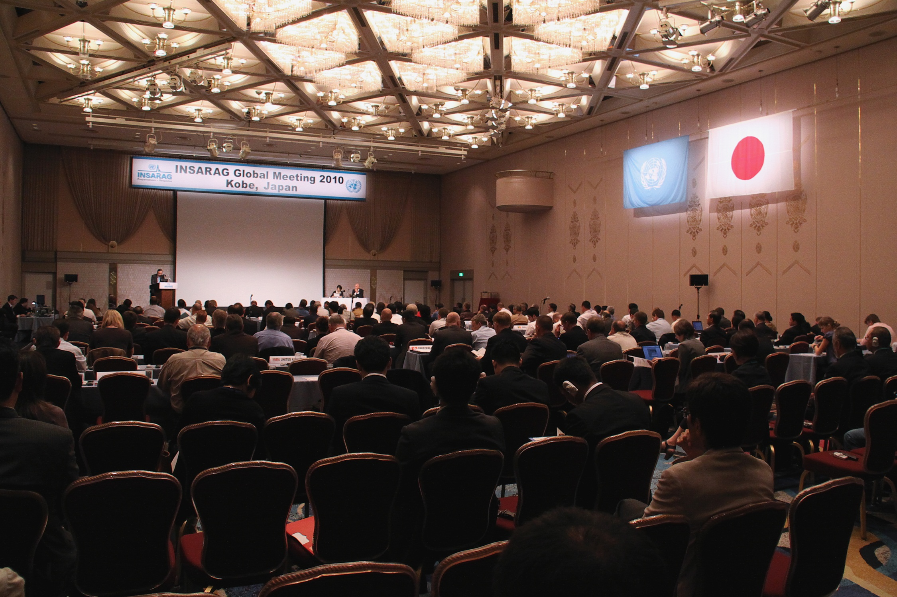
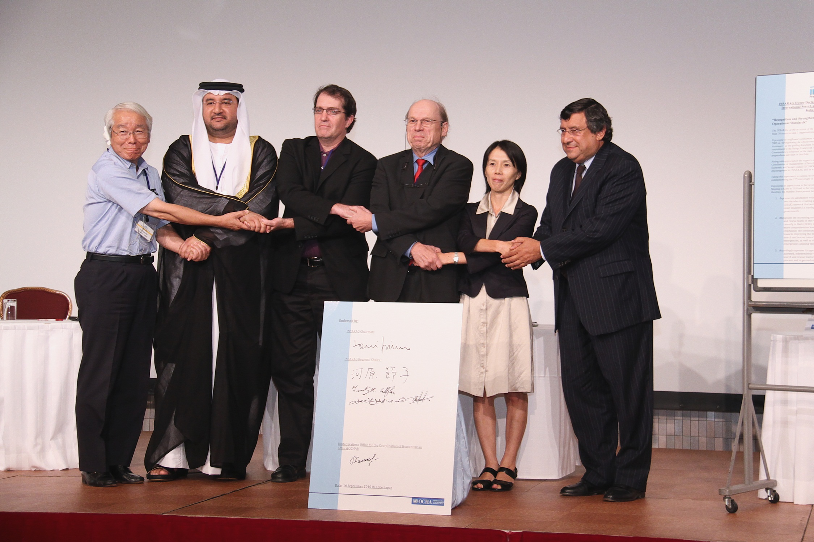
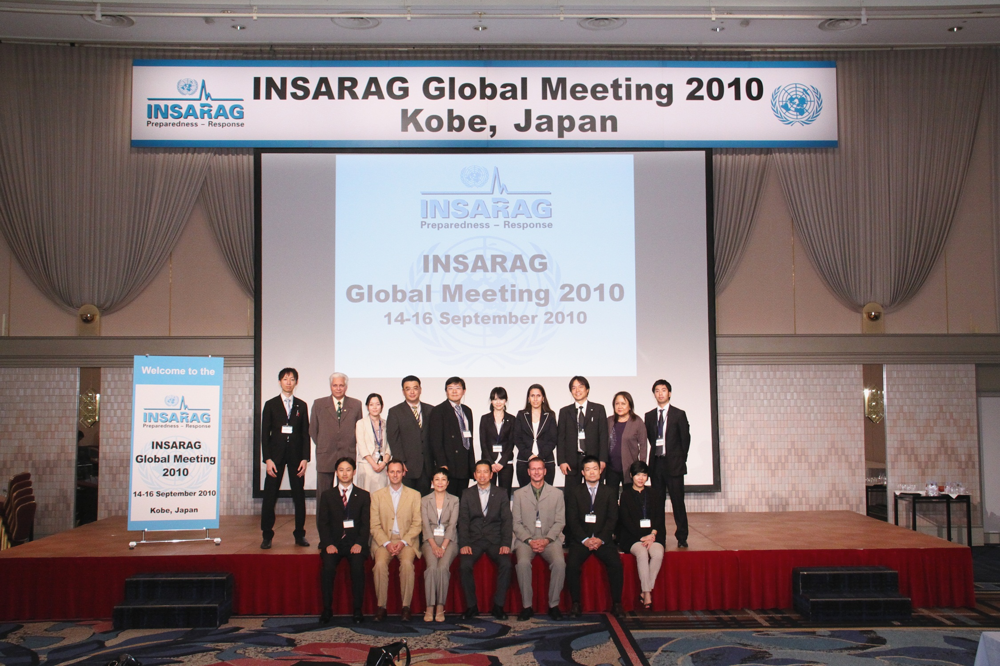

Greetings from the Secretary-General together with a video message from Ms Valerie Amos, Under-Secretary General for OCHA were warmly welcomed by the participants. The Secretary-General said INSARAG had "come a long way" since it was founded in 1991, and he welcomed its efforts to promote greater professionalism and coordination. "There is great scope for sharing lessons learnt and using modern technology to provide even more effective support to affected communities and governments."
 
An important outcome of the INSARAG Global Meeting was the creation of the INSARAG Hyogo Declaration (English, French) with recommendations on "recognition and strengthening of international urban search and rescue operational standards" which was unanimously agreed upon by all participating countries. The giant copy of the declaration signed by all the meeting participants was handed over to the Governor of Hyogo, to be displayed at the Earthquake Museum in Kobe, Japan.
Photo INSARAG Hyogo Declaration at the Museum-1
Photo INSARAG Hyogo Declaration at the Museum-2
2010 INSARAG Global Meeting Chairman Summary (Arabic, English,French)

{kind=link}
{kind=link}